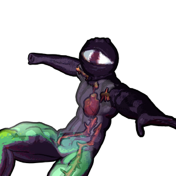

Amaziah
背景

愤怒化为血肉。
地下城中被囚禁的灵魂，据说拥有巨大的腐蚀力量。它在门旁跺脚，准备痛击任何靠近之人时，周围空气中都能感受到它的愤怒。侦察员曾贴近聆听，并描述它持续尖叫和愤怒呓语都与一个特定名字有关：“Bae鈥橞ijonn。”研究者在地下城内外都没有找到符合这一名字或称号的生物或个人。但有一点可以确定：这名门卫对该名字怀有难以想象的巨大怨恨。仅仅提到这个名字，就足以让战斗法师小队迅速死亡。为测试反应，该实体会狂暴地扑向提及这个名字的人。
据说这个存在会在地下城中层的一座古老宫殿里游荡，永恒地跺脚与怒吼，直到有人挑战它，或碰巧进入它的视野。直到今天，我们仍不确定它如此愤怒的真实目的是什么，也不清楚是什么能导致这样的东西诞生。
“KILL YOU KILL YOU KILL YOU!”
- Amaziah
策略
Amaziah 是一个毒属性 Boss，主要使用近距离攻击，所有攻击都会额外射出毒性投射物。HP 降至 60% 时，Amaziah 的招式组会扩展，可以进行更大、更致命的跳跃，扑向空中的对手，并从脸部发射光束。
统计
基础 HP：15000
伤害：物理和毒
| 属性 | 抗性 |
|---|---|
| 物理 | 中性 (1x) |
| 火焰 | 抗性 (0.75x) |
| 冰霜 | 弱点 (1.5x) |
| 电击 | 中性 (1x) |
| 光耀 | 抗性 (0.75x) |
| 暗影 | 弱点 (1.25x) |
| 毒 | 抗性 (0.5x) |
KILL YOU KILL YOU KILL YOU KILL YOU KILL YOU 语无伦次的咕哝